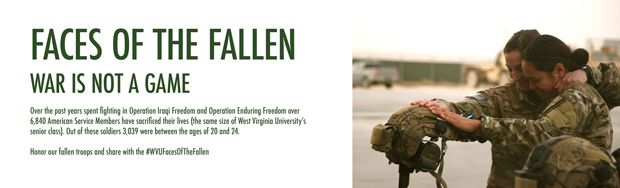
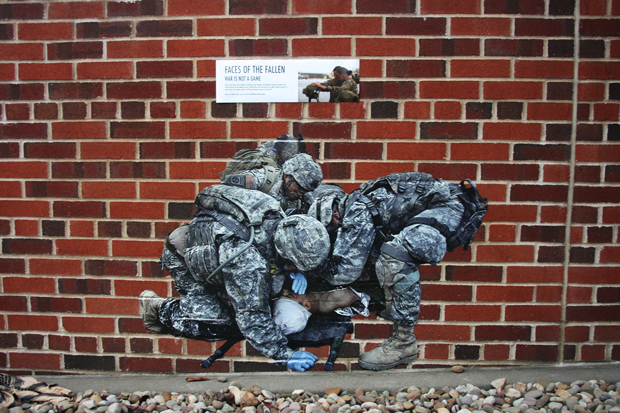
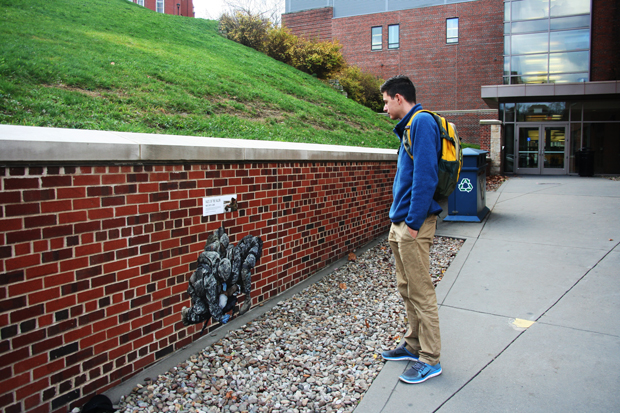
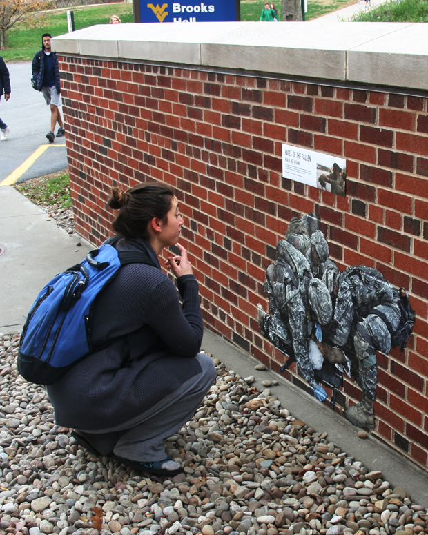
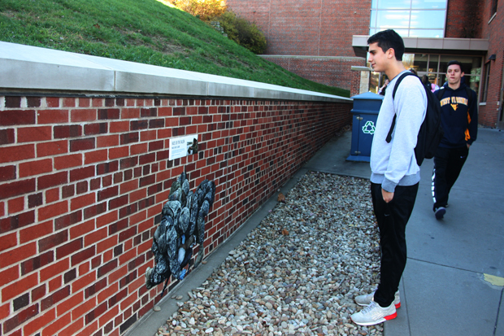

FACES OF THE FALLEN SITE SPRECIFIC DESIGN
Faces of the Fallen was deigned to bring attention to the large amount of fallen soldiers who have sacrificed their lives. My goal was to relate it to the students of West Virginia University to evoke a connection. The poster read as follows:
"Faces of the fallen. War is not a game. Over the past years spent fighting in Operation Iraqi Freedom and Operation Enduring Freedom over 6,840 American Service Members have sacrificed their lives (the same size of West Virginia University’s senior class). Out of these soldiers 3,039 were between the ages of 20 and 24. Honor our fallen troops and share with the #WVUFacesOfTheFallen"
Just after a day of being up, the hashtag was spreading on social media. The local newspaper asked for an interview and published a front page story about the work.
- 
- 
- 
- 
- 